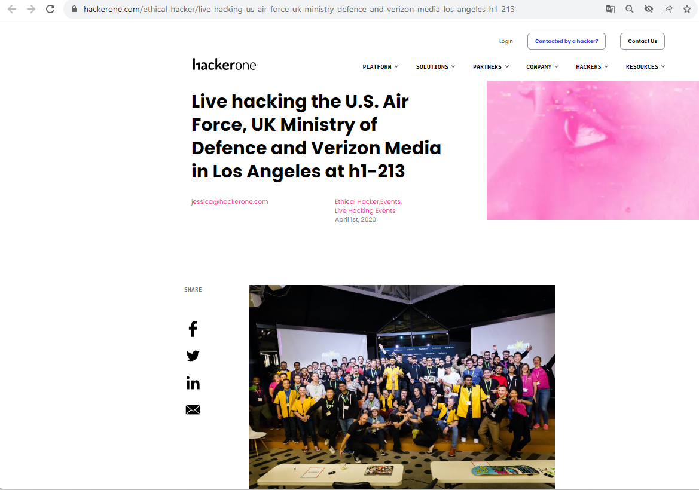
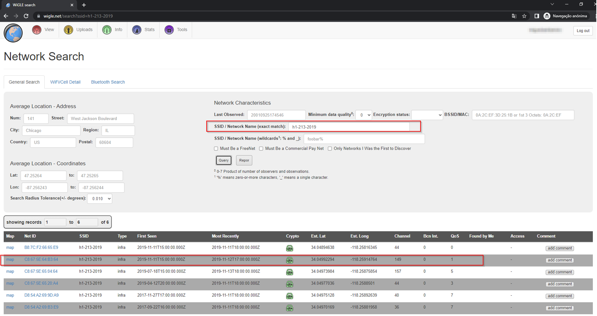
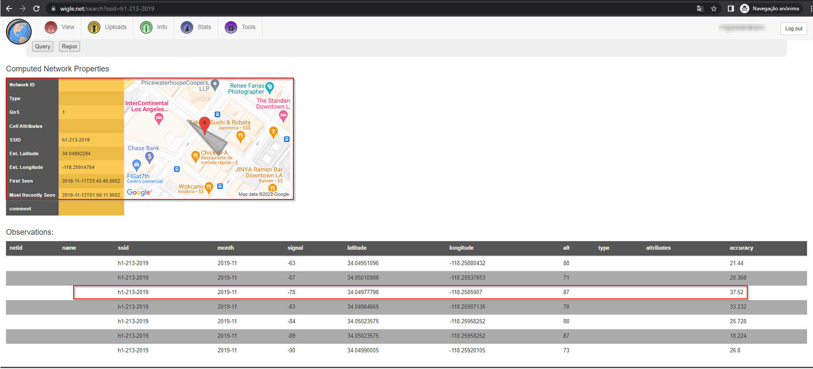
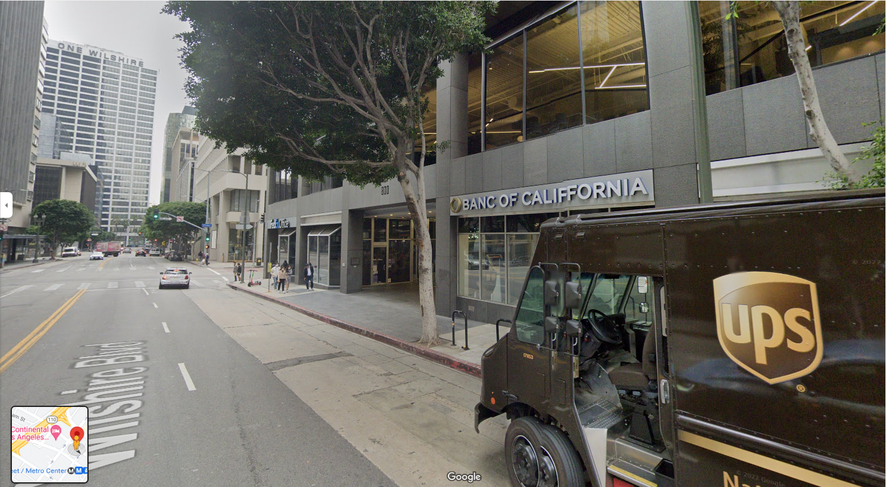
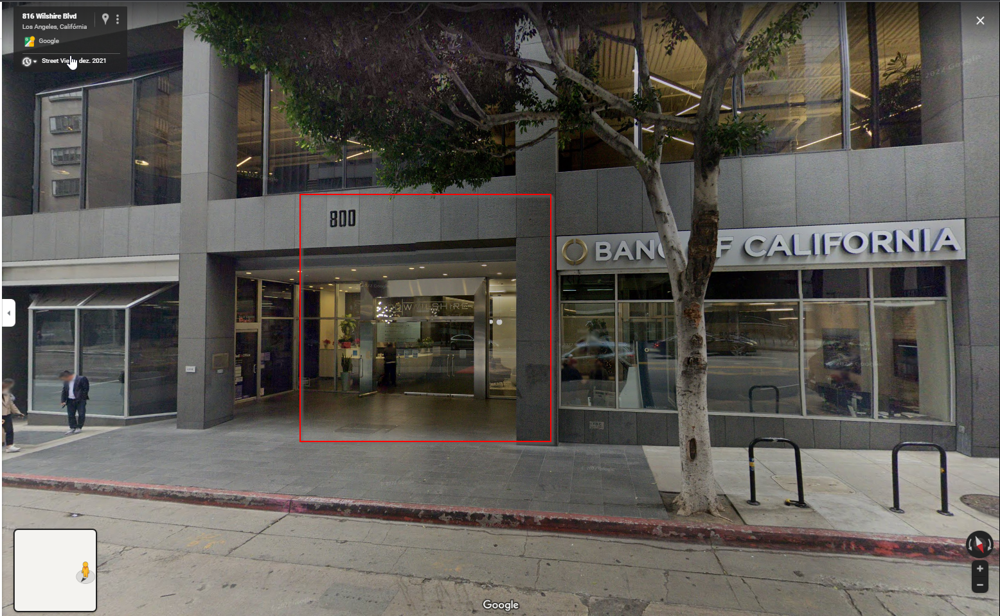
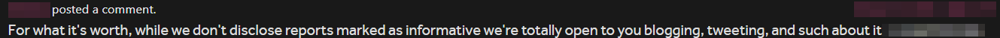

Geolocating Past Hackerone Live Hacking Event
I saw the below article and I decided to Geolocate the event on a different approach.

Has we can see in the image above we have "h1-213".
If we try to use a SSID of h1-213 + year of the event maybe we could get something.
So I decided to check if SSID h1-213-2019 exists and I was able to geolocate the place where the event was made.
Create/login into https://wigle.net/ and make a search for the SSID h1-213-2019

Open the second result and copy the third value into maps.

And you got the place where h1-213 happen :)

Exact location of the event:

Hackerone Authorization to write about this.

Quote of the day: Try Harder!